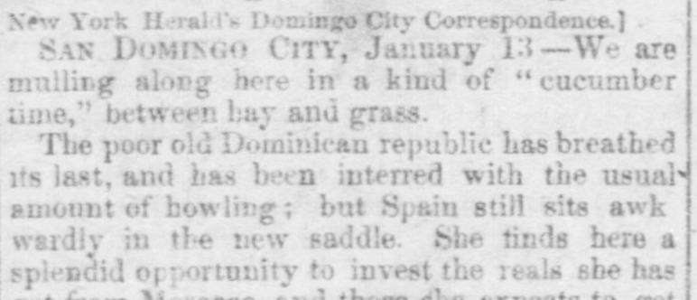
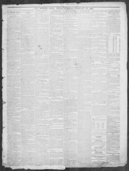

See the full pageVer la página completaShe finds here a splendid opportunity to invest the reals sheElla encuentra aquí una espléndida oportunidad de invertir los reales que
Based on the provided newspaper excerpt, the Dominican Republic has ended and been annexed by Spain, though Spain finds the acquisition less than a bargain and is constrained by Castilian pride from backing out. No great powers have recognized the island as a Spanish province, while the consulates of France, England, and the United States maintain a modest presence. Spain is proposing several measures—including a new tariff, making Samana a free port, exercising religious tolerance, and encouraging global emigration—while the city has materially benefited from the change in government.A tenor del extracto periodístico, la República Dominicana dejó de existir y fue anexionada por España, si bien esta última encuentra la adquisición poco provechosa y se ve refrenada por el orgullo castellano para desistir de ella. Ninguna de las grandes potencias ha reconocido la isla como provincia española, en tanto que los consulados de Francia, Inglaterra y los Estados Unidos mantienen una discreta presencia. España proyecta varias medidas —entre ellas un nuevo arancel, habilitar Samaná como puerto franco, garantizar la tolerancia religiosa y fomentar la inmigración internacional—, mientras que la ciudad se ha beneficiado materialmente con el cambio de gobierno.
FULL TEXT:TRADUCCIÓN:
New York Herald's Domingo City Correspondence.]Correspondencia de la Ciudad de Santo Domingo del New York Herald.]
SAN DOMINGO CITY, January 13—We are mulling along here in a kind of "cucumber time," between hay and grass.CIUDAD DE SANTO DOMINGO, 13 de enero —Estamos avanzando aquí en una especie de «tiempo de pepino», entre heno y grama.
The poor old Dominican republic has breathed its last, and has been interred with the usual amount of howling; but Spain still sits awkwardly in the new saddle. She finds here a splendid opportunity to invest the reals she has got from Morocco, and those she expects to getLa pobre vieja república dominicana ha exhalado su último aliento, y ha sido enterrada con la cantidad usual de aullidos; pero España todavía se sienta torpemente en la nueva silla. Encuentra aquí una espléndida oportunidad para invertir los reales que ha obtenido de Marruecos, y aquellos que espera obtener
Memphis Daily Appeal. Memphis, Tenn., February 25, 1862.
See the original at the Library of CongressVer el original en la Biblioteca del Congreso
Published by: S.T. Seawell & W.N. Stanton, -1886.Publicado por: S.T. Seawell & W.N. Stanton, -1886.
Edition: Edition 1Edición: edición 1
Page: 2Página: 2
Frequency: daily (1847–1886)Frecuencia: diario (1847–1886)
Collection: Chronicling America, Library of CongressColección: Chronicling America, de la Biblioteca del Congreso
LCCN: sn83045160LCCN: sn83045160
ISSN: 2166-1898ISSN: 2166-1898
OCLC: 9355541OCLC: 9355541
Rights: public domain, according to the Library of CongressDerechos: dominio público, según la Biblioteca del Congreso